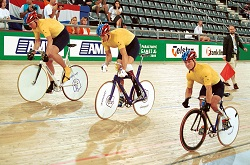
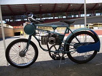
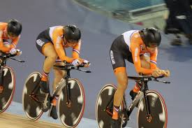

The individual sprint is a track cycling event involving a one-on-one match race between opponents who start next to each other.
Men's sprint has been an Olympic event at every games except 1904 and 1912 while women's sprinting has been contested since 1988.
The early parts of each race will often be highly tactical with riders pedalling slowly often trying to force their opponents up high on the track in an attempt to get their rivals to make the first move. Some even bring their bicycles to a complete stop.
When racing, the rider who stays just behind their opponent expends less effort by reducing the aerodynamic drag. Just before the finish, the second rider pulls out of the slipstream, and with fresher legs, may be able to overtake their opponent before the line. To prevent this, the leading rider may choose to accelerate quickly to establish a large enough gap to negate the aerodynamic effect.
During the race, the lead out rider may choose to hug the inside of the track giving them the shortest path around the track. Likewise, they may choose to stay outside the sprinter's red line to force their opponent to come higher over the top of them. Once the sprint is started, riders may not drop into the sprinter's lane or cross out of the lane unless they have a clear lead over their opponent.

Team Races
The team sprint is not a conventional cycling sprint event. The men's event is a three-man team time trial held over three laps of a velodrome. The women's event is a two-woman event held over two laps.
The team sprint has been an Olympic event for men since 2000 and for women since 2012.
Like the team pursuit event, two teams race against each other, starting on opposite sides of the track. At the end of the first lap, the leading rider in each team pulls up the banking leaving the second rider to lead for the next lap; at the end of the second lap, the second rider does the same, leaving the third rider to complete the last lap on his own. The team with the faster time is the winner.
The last rider needs good endurance qualities to maintain high speed to the finish. Time trial specialists are usually chosen for this role.

The Keirin
The Keirin is a form cycle racing in which track cyclists sprint for victory after following a speed-controlled start behind a motorized pacer. It was developed in Japan around 1948 and became an Olympic event in 2000.
Races are typically 6 laps on a 250 m. Lots are drawn to determine starting positions behind the pacer, which is usually a motorcycle or electric bicycle. Riders must remain behind the pacer for 3 laps. The pacer starts at 19 mph, gradually increasing to 31 mph by its final circuit. The pacer leaves the track 750 m (820 yd) before the end of the race after which the sprint begins.
Competition races are conducted over several rounds with one final. Eliminated cyclists can try again in repechages.

Pursuit Cycling
The individual pursuit is an event where two cyclists start from a stationary position on opposite sides of the track. The event is held over 2.5 miles for men and 1.9 miles for women. The two riders start at the same time and set off to complete the race distance in the fastest time. This race makes for a good spectacle as the two riders pursue each other attempting to catch the other rider who started on the other side of the track. If the catch is achieved, then the successful pursuer is declared the winner. However, they can continue to ride the rest of the race distance in order to set the fastest time in a qualifying race or a record in a final.
The team pursuit is similar to the individual pursuit but with teams of riders.
The men compete with a team of 4 riders, the women with 3. The distances remain the same as the individual races.
The objective of the team pursuit remains the same, catch the oposition or achieve the fastest time. The team's ride in a close line to minimise drag and conserve energy. Every lap or two the lead rider peels off and joins the back of the line. Time's are recorded when the third rider's front wheel crosses the finishing line.